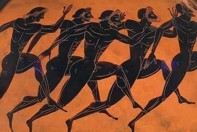

Everyday Systems: Podcast : Episode 90
Zeno's Paradox Exercise Progress Plan -or- How to Philosophize with a Sledgehammer
Welcome to the Everyday Systems Podcast episode number 90: Zeno’s Paradox Exercise Progress Plan -or- How to Philosophize with a Sledgehammer in which you will learn how to bounce back from exercise-related injuries and in general, how to make lasting progress in any habit you may be practicing.
First, a few quotes from previous episodes:
“Maintenance is more important than progress.”
“Progress is temporary, maintenance is what you’ll be doing for the rest of your life.”
“The Progress Trap.”
These are core Everyday Systems principles – valid for the No S Diet, valid for Shovelglove, valid for them all.
But just because maintenance is more important than progress doesn’t mean that progress isn’t important at all – especially the feeling of progress, that motivationally useful, if dangerous psychological craving. And it’s most especially useful (and dangerous) right after you’ve had a severe reversal, experienced the opposite of progress in your habit, say, because of an injury for exercise or a major falling off the wagon in terms of diet. All of a sudden, you are so far from where you want to be, from where you were. You want to rush back to that level. How do you safely harness that eagerness and enthusiasm without being carried away by it and injuring yourself again, or doing some other unsustainable, extreme thing that will inevitably lead to another crash?
I got personally very interested in this subject when after almost 20 years of injury-free shovelglove, I got bad golfer's elbow in late 2021. I’m still not 100% sure what caused it (my favorite theory involves lifting air conditioners to the basement), but I think that’s often the case with injuries; we just don’t know. It took a lot longer than I’d anticipated to recover from it, to the extent that I have recovered. Longer than necessary, I think, because of my initial overeagerness, though it could have been a lot worse, if I hadn’t been at all aware of the progress trap.
Today I’m going to talk about a system for taking progress trap awareness, progress trap consciousness to a whole new level, a system for channeling that hunger for progress safely. Not ignoring it, not repressing it entirely, but certainly not letting yourself getting carried away with it, instead, throttling it, using it to keep you recovering, maintaining, and making the steadiest, most lasting kind of progress available to us limited mortal creatures, conscripting it in the cause of “maintenance first.”
I call it Zeno’s Paradox Exercise Progress Plan. I use it myself explicitly both for running and Shovelglove, but it’s starting to inform my thinking about other, non-exercise habits too.
Here’s the inspiration: Zeno was an ancient Greek philosopher. He was one of those so-profound-it-veers-into-the-ridiculous guys who thought the physical world we see around us doesn’t actually make sense – the Eleatic school. Zeno thought that if you used logic you could show that reality was absurd – basically, expose a glitch in the matrix. He concocted a famous thought experiment, “Zeno’s paradox,” which is apparently so subtle, that it took mathematicians 2000 years to fully refute it.
You may have heard of it: there are a bunch of versions, but the best known is Achilles and the Tortoise. It’s like a mathematical version of Aesop’s tortoise and the hare.
Imagine that Achilles, that mythical hero from the Iliad, the most powerful of them all, “god-like Achilles,” “swift-footed Achilles,” basically a superhero, (also a major asshole, but that doesn’t enter into it here) was having a race with a tortoise, not an especially swift creature.
It’s not a fair contest. Achilles is at least 100 times as fast as the tortoise. So we give the tortoise a head start. Say 100 feet. What happens when they start to race? Think it through.
Achilles shoots forward and moves 100 feet. The race is barely underway and he’s already caught up to where the tortoise started. Where is the tortoise now? Well, he’s 100 times slower than Achilles so in that same span of time he’s moved ahead just one foot. Not looking so promising for the tortoise. But notice, he’s still a foot ahead.
In a fraction of a second more Achilles moves one foot to catch up. But in that same fraction of a second the tortoise has moved a hundredth of a foot. Still ahead.
A millisecond: Achilles moves a hundredth of a foot. The tortoise moves a ten thousandth of a foot, hardly anything at all, but still a hair ahead.
And so on and so on and so on–for ever. Achilles can come infinitely close to catching up with the tortoise, but he will never quite make it. Achilles is 100 times faster than this tortoise, but he will never win the race. It’s mathematically impossible, according to Zeno.
Our experience tells us this is absurd. Set up a race like this in real life and it’s pretty clear Achilles is going to smoke the tortoise. But logically it’s pretty airtight. Like I said, it took mathematicians two thousand years to fully refute it. For Zeno, this obvious conflict with reality didn’t prove he was wrong, but rather, the other way around: it proved, he thought, that our empirical reality is wrong. He thought he’d found a glitch in the matrix, that he’d proved that our world of movement and change is bullshit, that it doesn’t make sense, that true reality must be something beyond it.
So what does the ancient Greek Neo / captain of the Monty Python Philosophy Football Club have to do with exercise?
What Zeno’s Paradox Exercise Progress Plan takes from Zeno and his paradox is not the deep math or mind-bending philosophy, but this idea of coming infinitely close to a goal but never actually hitting it and then using it as a motivational and safety tool. The idea is to stretch out our goal-lust for ever, or at least, for as long as possible without letting us push into dangerous hubris. Slowing down as you approach the goal to productively and safely milk your hunger for progress for as long as possible, for ever, ideally. So you don’t run smack into the brick wall of a physical limitation or an injury as hard or as often.
It flips the usual image of progress. With Zeno’s Paradox Exercise Progress Plan, progress is a reward. The feeling of progress is a reward. You don’t reward yourself for progress, you reward yourself with progress. And because you don’t have an infinitely large amount of progress to dole out (you will hit fundamental limits of human capability very quickly), you divide it up into infinitely small doses (or as close as you can come to it).
Progress isn’t its own reward, à la virtue. But rather progress is maintenance’s reward. You can make more of it when your last increment or progress was as close to mere maintenance as possible.
Woah. That does sound almost Neo-level deep.
So what does it look like in practice?
Here’s how I do it with running, which lends itself very well to this approach because it’s so easy to measure and in very small increments (and thematically close to the initial Achilles point of inspiration).
I started running almost 20 years ago when a coworker invited me to tag along for an afternoon run and I made the startling discovery that for me at least the secret to running was that you just had to go really slow. Shovelglove, which I’d been practicing for a few years already at the time, had gotten me into decent enough shape overall that I could run a couple of miles without stopping. I was astonished.
Now, I am not and never was very talented at running, but I live in the metro-Boston area so it didn’t take long for me to go from this to having visions of marathons. I picked up a book on ultramarathons and barefoot running called Born to Run, which is utterly fascinating, most of all for the stories it recounts, but also in that it presents this convincing case that we evolved as persistence hunters (I love this term): hunters who chased down pray not with teeth or claws or even weapons initially (the ability to make tools and weapons developed much later in our evolutionary history), but through sheer endurance. We would run after gazelles and what not until they literally dropped dead from exhaustion. Our prey could outsprint us, almost any animal can, and in a corner out- muscle us, and out- hoof and horn us, but they could not out-marathon us, at least a pack of us. And even today, according to this book, most of us have that ability to run great distances locked inside. It’s the one respect in which we are physically impressive animals. There are a couple of hunter gatherer societies left that still practice persistence hunting – the Taraumara in Mexico and some Bushmen in the Kalahari. But even you, cooped up in your cubicle or huddled under the blankets watching Netflix, even I, so the theory goes, have that ability.
So I was intellectually sold – but even more important, to my astonishment, I discovered that I actually enjoyed running. When I ran with other people it was a nice social thing. We had a running group when I worked at Harvard Library Technology Services called “Runtime Library.” When I ran alone I could listen to an audiobook or spiritually recharge. I was outside. It was meditative or at least head-clearing. I found beautiful running paths along the Charles River.
The problem? NOT the cardio, the sheer panting exhaustion, the part that had always scared me when I was young. That was not the limiting factor. The wall I hit, over and over again, is that I kept on injuring myself: IT band, runners knee. Some little part of my anatomy that I hadn’t even been aware existed. The rest of me was raring to keep going but some obscure little tendon or something would suddenly refuse to cooperate. It enraged me. And I was embarrassed at the sad little distances and sluggish pace at which this would happen. At first I tried to power through the pain which only made the injuries much worse. PT was not helpful. I felt like I was being punished for complaining by being given more and more boring stretches and exercises to do.
The only thing that helped was cutting back drastically. For a time it seemed the only thing that would really help would be to just stop forever and find something else to do. But that was a sad prospect. And slowly, if I laid off long enough, the pain would eventually go away. And I tentatively discovered I could run a bit again, and then a bit more. But then I’d injure myself again. And it would all start over.
I tried so many things. Stretches, PT as I mentioned, different shoes, no shoes, foam rollers. I beat myself with rubber truncheons. I watched 5000 youtube videos by every other random person on the internet. So many times I thought, “this is it, this is the trick, I finally got it. Gazelles, watch out.”
But no. Every time, and it never even took that long, it got me again, over and over. My stretches, my warm up and cooldown were taking more time than my actual running. I thought I was being so patient, so good, so “listening to my body.” I’d have the merest flash of hubris, I can’t even call it that, honestly, just a flash of innocent hope, and I’d be hobbling home again.
That’s when Zeno’s Paradox Exercise Progress Plan began slowly to emerge.
The first step was lowering my ambitions in terms of the ultimate goal. What did I actually want out of this? Not some fantasy, but really, what did I want? I decided I didn’t really care about running a marathon or even a half marathon. I just wanted to be able to run a few miles regularly. I didn’t care at all about speed. I wanted to enjoy the feeling of running, be outside, maybe with other people sometimes, just know that I could do it, that I was capable of this. I knew that for fitness and weight control I didn’t really need to add anything else to my routine. From years of experience I knew that my other “body” systems, No-S plus Urban Ranger plus Shovelglove were sufficient. If anything, I tend to gain weight when I run more, maybe because of all those lower torso muscles bulking up a bit.
So I got marathons and the tarahumara and persistence hunting out of my head. 5K. That was a distance people actually ran. It wasn’t an embarrassing distance. There are 5K races – yes, they are pretty much all just for charity, but still. It’s a small kind of glory. I had even once run one. I still have the t-shirt. 5K is the shortest respectable distance. So that would be my distance goal. To regularly, reliably run 5K. It was the smallest inspirational yet still attainable goal I could come up with.
Next: frequency. I would never let myself run two days in a row, to allow recovery time. So three times a week was the most I could run, and I made that my frequency goal. It worked out that I happened to be taking a similar approach with shovelglove, as I’ll explain later, so I could alternate days, lower body/upper body, and not feel lazy on my off days from the one because I’d be doing the other. One day a week, Saturday or Sunday, I would totally rest. This made sense in itself, and kept me on a nice, predictable, weekly cadence. And the extra day gives me a bit of wiggle room in case of torrential rains or blizzards to shift things around if necessary.
Then there was the most important part, the question of how rapidly to advance toward these goals, my rate of progress goal. I knew how out of nowhere injuries could ambush me. I knew how slower than slow I’d have to build up to try to avoid them. So I thought, first off, since my distance goal is in kilometers, I’ll track everything in kilometers instead of miles as I used to do. That’s good right there, kilometers vs. miles, then everything is smaller, gentler. My runkeeper app can measure these finer resolution increments no problem.
So my first run, you could barely call it that, was just a quarter K., .25 K. It was hard to make myself stop. It felt so pathetic. But I was ruthless in my moderation. I refused to indulge my hubris. I was hard on myself by not allowing myself to be foolishly hard on myself. Next run, two days later, half a K. Then .75, then two days later, a full K. Hardly anything really, but still, too fast to continue at this rate of progress if I wanted to stretch it out forever. I needed to slow it down. I didn’t want to hit 5K – or more likely, an injury – too quickly. So after that first K I allowed myself only a fifth of a K progress each run, a .2 K increase every run from 1K until I hit 2K.
Then at 2K I took it down to a tenth of a kilometer increments. So slow. But no injuries. I should have probably taken it down to .05 kilometer increment once I hit 3 K, but the mental math was too hard, so I kept on going .10 K a run longer until I hit 4.9K. Still, no injuries. Then, so close to my goal, I knew I had to decelerate big time. I went all the way. At least, all the way my running app, Runkeeper, would let me. I dialed it back to just .01 K progress each run. Runkeeper can’t measure anything less. Even .01K it has trouble with – sometimes I’ll stop and then see it’s pushed me over just in the time it took to hit the “end run” button.
I had a problem. My guiding inspiration, Zeno’s paradox, is the idea of infinite reductions. But GPS, at least on my phone, can’t handle infinity. .01 K is small but not infinitely small and that's the end of the line. And I was there. What do I do now that I hit the full 5K?
A compromise with strict philosophical purity was required: I decided that since .01 Kilometers is as close to infinity as my phone’s GPS can come, I’m going to call that good enough, the best approximation I can do. I will continue to allow progress (even past my goal!) at that almost infinitely slow rate.
And there is a kind of infinity buried within it, because even though the rate is constant, .01 k = .01 K = .01 K, it is decreasing, potentially infinitely, as a proportion of what I’ve already run. The relative amount of progress gets relatively smaller, even if it absolutely stays the same.
Am I worried that it will, eventually, absolutely add up to too much? That after a few years of this I’ll be running marathons? Not really. It would take many years, more than a decade, for me to get that far. And that’s assuming my progress won't get interrupted by an injury, or unrelated life chaos, or mere old age, or slamming into some other sheer physical limitation, all of which seem inevitable, and then I have to reset back to some lower distance and start all over again. And that’s OK. Zeno’s paradox progress plan is built to handle such resets. And if by some miracle I never hit such an obstacle, if I keep running .01 K farther every run, 52*3=156 times a year, for the next decades, into my 90s, well, one the one hand, great, that would indeed be a miracle, and on the other hand, I am allowed to stop, I don’t have to keep making progress. Progress is my reward, not my requirement. If I don't want my reward I can stop. I can coast. Coasting can become my reward. I imagine there may come an age or a point in my life where the reverse of progress may seem as rewarding as progress used to.
A beautiful thing about progressing this slowly is that you catch even the slightest hint of an injury very early. And you give your other, weaker tendons and muscles so much time to catch up with the rest of the gang, that they become strong enough to resist many such injuries.
That’s how I apply Zeno’s Paradox Exercise Progress Plan to running. It’s going great. I don’t want to do any hubristic bragging, but I am surprised and delighted by what I can do again, 5.15 K yesterday, and very grateful.
So how have I been applying this to Shovelglove?
As with running, I was inspired to take this new approach due to injuries. Running I was never able to do without injuries for any stretch of time but with shovelglove I had a 20 year lucky streak. Pretty great, as a streak, but also pretty shocking when the injury came. I had to do a bit more mental adapting to come to terms with it. And there's the fact that I invented Shovelglove and I did not invent running so I identify with it and take responsibility for it in a way that I can’t with running. So I was a lot less patient with myself.
Some of the elements of Zeno’s progress plan occurred to me in the first few months of the injury, but I was in denial for a while. And it took me a while to slow it down and get methodical enough. And I’m still futzing with some of the parameters.
After my injury and months of fumbling to get back to where I’d been, I asked myself the same basic questions as I did for running: one, what do I really want, in terms of shovelglove? What is a reality-compatible goal that I actually care about?
My immediate goal had been, after the injury, get back to where I was, 20 pound hammer five days a week, all the old movements, 14 reps of each.
But as with the running, when I stripped away the inessentials, the mere vanity, I knew what I really cared about was being able to do this regularly, challenging myself with the heaviest hammer I could swing without pain or discomfort. Maybe that would wind up being 20 pounds again, eventually. But maybe not. Someday, maybe even already, my old tendons were not going to be up for a 20 pounds sledgehammer anymore. So I let my weight goal be non-specific. If 16, 12, 10 even was where I wound up after months of patient experimentation and continuous reassessment, I would allow myself to feel grateful for it.
As for 5 days a week — well, with the running that was a bit much anyway. Multiple exercise sessions a day does not seem moderate. And a rest day in between each shovelglove session for those old tendons seemed like it might be necessary. I decided could live with three days a week.
In terms of rep count, I realized I wasn’t wedded to this at all. The routine of 7s, where each movement is repeated just 7 times in a set, once for each movement and once for each hand, then repeating the whole cycle a second time, seemed both the safest rep count protocol and my sense of ambition had no problem with it And it’s exactly what I show in the youtube video, so it’s as canonical as it gets.
But now the hard part: how would I regulate progress? In what increments would I go up? This was a lot less obvious than it was with running, where I could just focus on that one, easily divisible number, distance run in kilometers. I decided I would try to stick with progressing along one variable for shovelglove as well: hammer weight. Everything else would stay constant from the start: days a week, the movements and their order and their rep count. Only the hammer would slowly get heavier. But the increments at which that happened were still a challenge.
Over the years I’ve collected quite a menagerie of sledgehammers, for my kids, for friends to try out, for myself as I was going up in hammer weight. So I could progress from next to nothing (I literally have a no-weight sledgehammer, a handle without anything attached), to 6, 8, 10, 12, 16 and 20 pounds.
There were a few specific moves that I worried were particularly uppy-arm unfriendly and had banished from my routine in my initial flailing around after the injury. But the truth is I didn’t feel 100% confident in my suspicions regarding them. And I missed these movements. So I decided I’d allow myself to re-incorporate them at a lighter weight (starting with no weight) from what I was using for the rest of the routine. I’d just switch hammers for those three moves (row boat, armwrestle, and most recently, shovel).
Keeping the full repertoire of movements in the same order in which I’d always done them was good in terms of habit. I could go on autopilot. I could watch Aida or As You Like It on streaming and not get distracted by having to think about what move comes next. It also made it easier to track my progress – and setbacks. All I had to record was the hammer weight for a set. I officially do not worry about the 2-3 movements for which I’m using the lower weight hammer.
I wish I could go up even more gradually, and evenly, with Shovelglove, to give every little muscle and tendon a chance to catch up with the rest before jumping up another tier. But they don’t make sledgehammers like that, with weights that go up in, say, one ounce increments. The 12 to 16 pounder in particular is a big jump. So my progress has been more jerky. I’ve reset many times now, all the way back to down 6 pounds, sometimes even zero pounds (I call this symbolic Shovelglove), and advanced again even more slowly. I’ll advance one set at a time. First set at the lighter weight, second set at the heavier one. Then both heavier, etc. I’ll stay with a given weight or pair of weights for weeks or months more before advancing. I pay very careful attention to the slightest pain signals, which if they come, usually come the day after.
I have enlisted Spider Hunter, my CBT for anxiety game, to motivate me to stop immediately if I feel pain in shovelglove or in running, even though it kills my pride and messes up my stats to interrupt a run or session. I give myself a bounty of 2 bonus points for stopping a run or a shovelglove routine when I feel pain rather than foolishly pushing through. I have very rarely actually had to do this, but since even one really bad exercise session can cause an injury that could impact me for months, it’s important to be able to recognize and respond to it immediately. Having this exit plan in place makes me feel a lot less anxious about attempting any kind of progress at all because I don’t have to be as scared of my hubris. I know I’ve got a mechanism in place to deal with it.
So that’s it. Zeno’s Paradox Exercise Progress Plan, the theory, and two extended examples.
To recap in three sentences: Progress is a reward, not a requirement. Dole it out in infinitely small little doses, or as close as you can to it. Progress is the handmaid of moderation.
I hope something in all this was useful or interesting to you. Thanks for listening.
© 2002-2024 Everyday Systems LLC, All Rights Reserved.